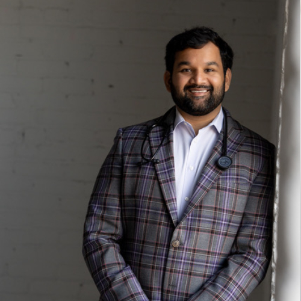
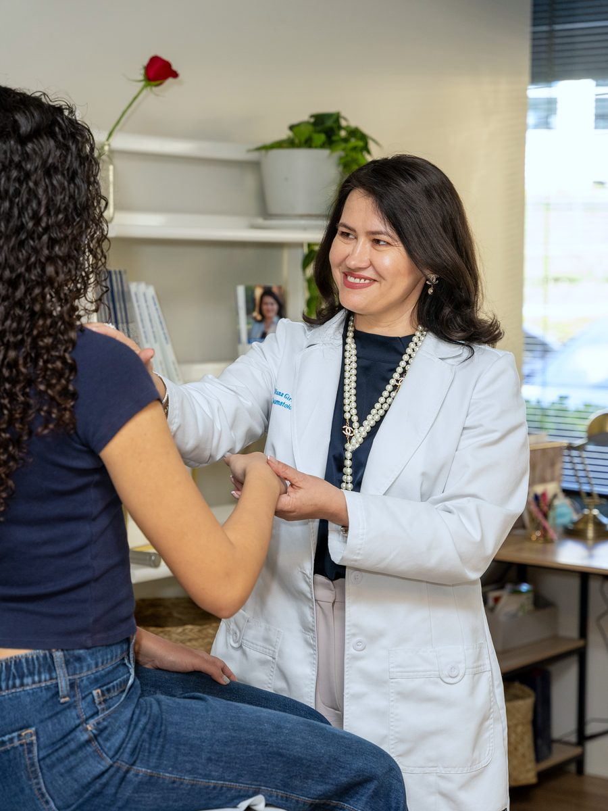
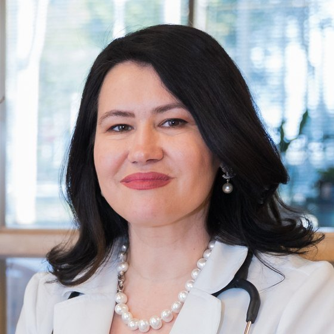
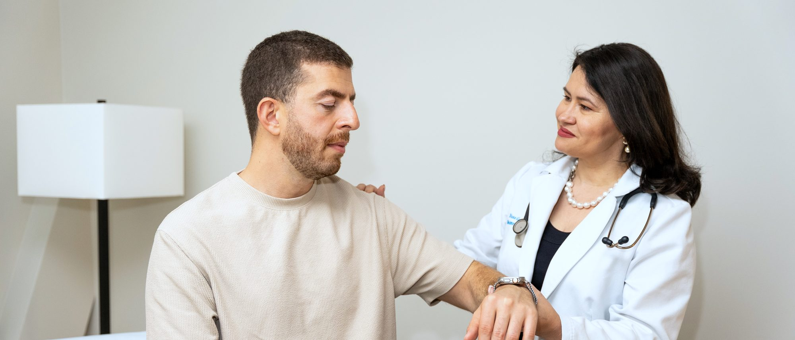

You have read a hundred things about your gut. You still do not know which ones are true.
The Gut-Immune Connection: how your microbiome really shapes autoimmune disease, and where the evidence stops.
Friday 23 October 3:00 PM PT / 6:00 PM ET Live, one hour. Led by Dr Vishnuteja Devalla, MD. A live session inside The Remission Circle.
Save my seatFree to attend. Recorded, so register even if you cannot make the night.

Dr DevallaEveryone is certain about your gut. That is the problem.

Heal your gut and the disease follows. You have been told that by a dozen accounts, and almost every one of them was selling you something at the end of it.
And here is what makes it so hard: they are not entirely wrong. The connection is real. That is exactly why it is so easy to sell things on.
So you are left holding a hundred claims and no way to tell which half is true. And the one person who could tell you has twelve minutes and a waiting room.
This is exactly what we built The Remission Circle for
The Remission Circle is an educational platform built by three rheumatology-trained physicians, for people living with autoimmune disease. One topic taught properly every month, a live hour, and somewhere to put the questions that do not fit into an appointment.
A twelve-minute visit was never going to hold this. Neither is a search bar at two in the morning.
This session is one hour of it. Come and see what it is like before you decide anything.
Save my seatDr Vishnuteja Devalla, MD
Board-certified rheumatologist. Rheumatology fellowship at Dartmouth-Hitchcock.
The gut and immune disease is not a topic he read up on for this session. It is his research area. Which is why he is going to do the thing almost nobody online does, and tell you where the evidence stops.
“The three of us complement each other. The gut and the immune system is Dr Devalla’s research area, and that is exactly why he is teaching this one.”

Dr Diana Girnita, MD, PhD
What the hour covers
The microbiome and inflammation, explained plainly. What is genuinely established.
Leaky gut: the myth and the science. Honestly separated.
Fibre, fermentation and diversity. What changes anything, and what does not.
Probiotics. Food or supplements?
Registrants send their questions in beforehand and the hour is built around them. Questions close Wednesday 21 October.
We complement each other
Between the three of us, 55+ years treating autoimmune disease. No one appointment covers all of it. That is the reason The Remission Circle exists.
-
Dr Diana Girnita, MD, PhD
Double board-certified rheumatologist. PhD in immunology, postdoctoral fellow at Harvard. Author of two books on nutrition.
-
Dr Vishnuteja Devalla, MD
Board-certified rheumatologist, Dartmouth-Hitchcock fellowship. Gut and immune disease, spondyloarthritis.
-
Dr Mirela Titianu, MD
Triple board-certified, including by the American Board of Lifestyle Medicine, and board-certified in obesity medicine.
- 250K+ subscribers on YouTube
- 40M+ views
- 190+ five-star reviews.
Featured by NPR, Medscape, The New York Times, The Wall Street Journal, HealthCentral, the ACR and the National Arthritis Foundation.
All three are in the room on the night.
What happens after the hour ends
The session is one evening. The Remission Circle is what holds the rest of it.
-
A written question and answer. You ask, and a doctor replies. Not a forum of strangers guessing.
-
One topic taught properly every month, by whichever of the three works in it most.
-
Everything recorded and kept. Nothing is lost if you cannot make a date.

The honest limit
The Remission Circle is education and community. It is not medical care, it does not replace your own physician, and nobody in there will give you advice about your own case. If what you need is a diagnosis and a treatment plan of your own, that is our Care Pathway, not this.
You do not need a diagnosis to belong here. If you are still looking for one, you are exactly who we built it for.
One hour. One honest answer about your gut.
No protocol to buy at the end. No supplement stack. A rheumatologist telling you what is real and what is not.
Friday 23 October, 3:00 PM PT / 6:00 PM ET. Free. Recorded. Your first month in The Remission Circle is free too, and you can cancel any time.